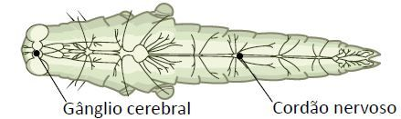
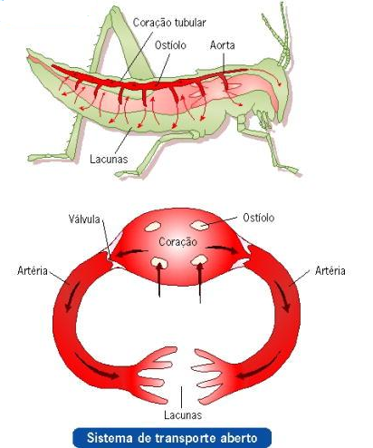
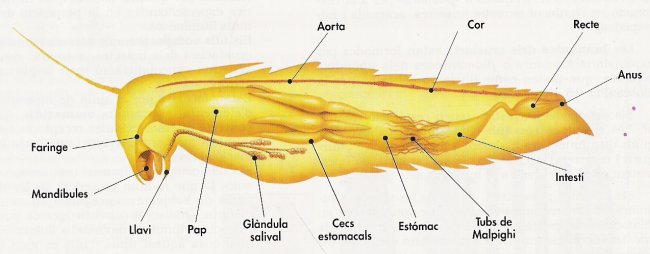
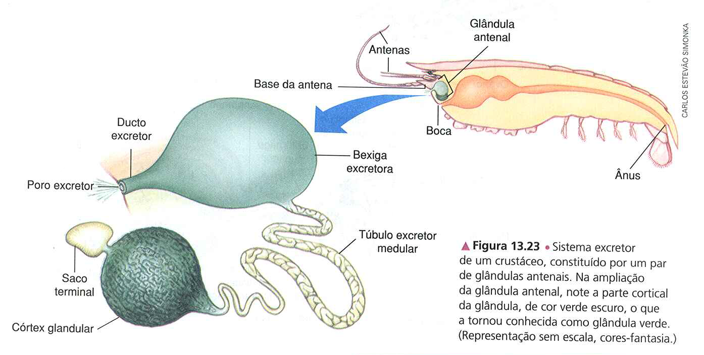

Corpo

Os artrópodes possuem vários órgãos e sistemas altamente especializados que desempenham funções vitais em seus corpos.
Vejamos alguns desses sistemas em detalhes:
Sistema nervoso:
Os artrópodes têm um sistema nervoso altamente desenvolvido. Possuem um cérebro centralizado localizado na região da cabeça que coordena as atividades do corpo.
Do cérebro, os nervos se estendem por todo o corpo, conectando-se a uma série de gânglios nervosos em cada segmento. Esses gânglios nervosos controlam o movimento, a percepção sensorial e outras funções corporais.

Sistema circulatório:
O sistema circulatório dos artrópodes é aberto, o que significa que um fluido circulante chamado hemolinfa lava diretamente os tecidos e órgãos. A hemolinfa é bombeada pelo coração, que é um órgão tubular localizado dorsalmente. A circulação da hemolinfa ajuda a transportar nutrientes, gases respiratórios e resíduos.

Sistema respiratório:
O sistema respiratório dos artrópodes varia de acordo com o grupo a que pertencem. Alguns artrópodes possuem brânquias, estruturas especializadas nas trocas gasosas com o meio aquático. Outros têm traquéias, que são tubos ramificados que percorrem o corpo e permitem a troca gasosa diretamente com os tecidos. Além disso, alguns artrópodes terrestres têm pulmões adaptados para respirar ar.

Sistema digestivo:
O sistema digestivo dos artrópodes é completo e geralmente inclui boca, esôfago, estômago, intestino e ânus. Os artrópodes têm uma ampla gama de adaptações alimentares, desde insetos herbívoros até aracnídeos carnívoros. A digestão ocorre tanto internamente, no sistema digestivo, quanto externamente, onde as enzimas digestivas são secretadas para ajudar a quebrar os alimentos antes de serem ingeridos.

Sistema excretor:
Os artrópodes possuem um sistema excretor denominado túbulos de Malpighi. Esses tubos removem resíduos metabólicos, como amônia e ácido úrico, do corpo. Os resíduos são excretados na forma de fezes ou urina, dependendo do tipo de artrópode.
